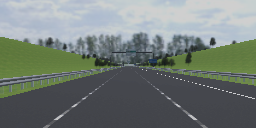

Task 1: Edge Communication with Hierarchical Inference
The task is a UDP client–server system. Each client classifies its samples locally with a lightweight model and sends a sample to the server's stronger model only when the local result is uncertain. The idea: offload computation only when local confidence is too low.
Why it helps
- Bandwidth: easy samples never leave the device.
- Latency: local decisions skip the network round trip entirely.
- Energy: radio transmission usually costs more than a small local model.
- Scalability: the server only sees a fraction of requests, so it can serve more clients.
Setup
| Client (edge) | Server | |
|---|---|---|
| Images | MobileNetV3-Small | ResNet-18 |
| Telemetry (JSON) | json_small.joblib | json_large.joblib |
Confidence is the Max Softmax Probability. A sample is offloaded when it falls below the threshold τ:
Provided by the starter repository
Model loading for MobileNetV3-Small and ResNet-18, image preprocessing, JPEG compression, the packet format helpers (IMGD / DATA) and the basic socket setup.
Our part
- Confidence and offloading decision: softmax over the client model's logits, MSP as confidence, and LOCAL / OFFLOAD with τ = 0.7.
- UDP communication: the client sends offloaded images to the server. The server handles
IMGDpackets, runs the provided ResNet-18 inference and replies with prediction and confidence. - Measurements: local latency and offload round-trip latency with
time.perf_counter(), byte counters, and a final report of offload rate, traffic and average latencies.
Results (100 samples, τ = 0.7)
The reported averages (15.8 ms local, 51.1 ms offload) are inflated by one-time warm-up costs on the first sample of each path: about 840 ms for the first local inference (CUDA initialisation) and about 630 ms for the first offload. Once warm, both paths take about 6 ms. Client and server ran on the same lab PC, so the network adds very little. 86 % of images never touched the network.
Task 2: Speed Estimation with ArUco Markers
A vehicle should estimate its own speed in real time using only its on-board camera. ArUco markers (square binary fiducials with known IDs and size) are placed at known positions on the track. Seeing them lets the car work out its own position, and speed is how far that position moves per unit of time:
Pipeline
Provided by the starter repository
Camera capture, ArUco detection, the 3D marker corner construction, solvePnP pose estimation and the conversion to camera position, plus the calibration script and the marker maps (marker_map_0–3.json, 8 cm markers).
Our part
- Camera calibration: we captured 19 checkerboard images from different angles and distances, covering the centre and corners of the frame, and ran the provided script. It produced K and d with a reprojection RMS of about 1.05 px.
- Loading calibration and marker map: reading K and d from
camera_calib.npzand the marker positions from the JSON map, so the provided pose estimation can run.
Task 3: Autonomous Driving
The car follows a road lane, and later dodges obstacles, using only a monocular camera. It runs on two platforms:
| Webots simulation | Wave Rover model car | |
|---|---|---|
| Vehicle | Lincoln MKZ 2017 | WaveShare Wave Rover + Raspberry Pi 4B |
| Steering | Ackermann (steering angle) | Differential drive (left/right wheel speed) |
| Track | 3-lane highway, 3.75 m lanes | 3-lane lab track, ≈ 1.7 m wide |
Task 3-1: Lane following
The skeleton gave us the vehicle and camera interface (Webots driver on the simulation side, serial connection on the Wave Rover). The lane detection and the steering below are our own work.
Sense. We warp each camera frame into a bird's-eye view (BEV) with a perspective homography. In the BEV, lane markings show up as roughly parallel vertical lines. The image is then converted to greyscale, Gaussian-blurred and contrast-enhanced with CLAHE. In the simulation, a horizontal Sobel filter finds the edges, and an HSV mask removes the grass verge so it can't produce fake edges. On the real car, Canny with thresholds set from the image median handles changing lab lighting better. Probabilistic Hough then extracts line segments.

Plan. For each Hough segment we fit x = m·y + b and evaluate it at the bottom of the image, where the vehicle is. The nearest segment to the left of the vehicle centre becomes the left boundary, and the nearest to the right becomes the right boundary. From these two lines we compute:
- Lateral offset: the lane midpoint minus the vehicle centre, in pixels.
- Heading error: the mean angle of the two boundaries minus 90°.
Act. A proportional controller combines both errors:
In Webots this value goes straight to setSteeringAngle at a cruising speed of 30 km/h. On the Wave Rover it becomes differential wheel commands: the wheel on the inside of the turn slows from 0.5 to 0.4. The command is sent to the base controller as JSON over the Pi's serial port. Small gains and clipping keep the car from oscillating.
Task 3-2: Dodging obstacles
An open-ended extension of 3-1. The car must detect obstacles on the road and steer around them safely. Teams choose their own perception, planning and control approach. Heavy perception, such as a neural detector, can be offloaded to the lab's edge servers, the lab PC or your own laptop, just like the hierarchical inference in Task 1.